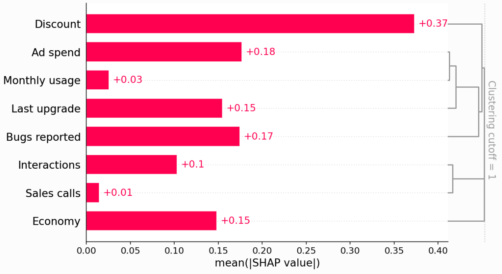

Prediction v.s. causal inference#
Executive summary
Predictive research aims to predict an outcome with the best accuracy. Explainability (e.g. SHAP) is about understanding why a model makes certain predictions. When making predictions, whether the direction of relationships (e.g. from SHAP values) is true/causal doesn’t matter, as the goal is just to make the best predictions.
Etiological research aims to uncover causal effects. It involves finding an unbiased estimate of the effect of X on Y, by controlling for confounding factors that could bias the estimate. In causal inference, the true direction of relationships (and the counterfactual scenarios) are important. It typically starts with drawing a causal diagram.
How do you know whether you are interested in prediction or causation?#
Scientific research can be categorised into descriptive, predictive and etiological research. Descriptive research aims to summarise the characteristics of a group (or person).[Hamaker et al. 2020] However, this page focusses just on predictive and etiological research.
Predictive research |
Etiological research (or “explanatory” research) |
|
|---|---|---|
Aim |
Aims to predict an outcome with the best accuracy.[Ramspek et al. 2021] |
Aims to uncover causal effects - i.e. causal inference. |
Relationships |
It doesn’t matter whether predictors are causal or not - just focussed on best prediction. |
Concerned with the true causal relationships between variables. |
Directionality |
We’re interested in associations (i.e. relationships aren’t directional).[source] |
It is important that relationships are directional, as these directions are required to support interventional reasoning.[source] |
Illustrative example#
A team have built an XGBoost model to predict whether customers will renew their subscription. They use SHAP values to understand how the model made its predictions. They notice a suprising finding: users who report more bugs are more likely to renew. Is this a problem? It depends on their goal
If their goal is to predict customer retention to estimate future revenue, then this relationship is helpful for prediction, and it doesn’t matter about the direction, as long as our predictions are good.
However, if their goal is to inform actions to help retain customers, then it is important to understand the true relationships between features and the outcomes, and the counterfactual scenarios if features were modified. In this case, the team are interested in causation. In order for the team to understand the causal relationships, they would need to use causal inference methods (causal diagrams, appropriate techniques to account for confounding).
Why did this finding occur? If the team are interested in causation, they could draw a causal diagram (simplified version below). In it, they notice that some features are influenced by unmeasured confounding. WIth the example above, users who report more bugs are people who use the product more so encounter more bugs, but need the product more so are more likely to report. Because they can’t directly measure product need, the correlation they end up capturing in the predict model between bugs reported and renewal combines a small negative direct effect of bugs faced and a large positive confounding effect from product need. [source]
flowchart LR;
need("<b>Unmeasured</b><br>Product need"):::white;
month("Monthly usage"):::white;
face("<b>Unmeasured</b><br>Bugs faced"):::white;
report("Bugs reported"):::white;
ren("Did renew"):::important;
month --> face; face --> report; face --> ren;
need --> report;
need --> month;
need --> ren;
month --> ren;
classDef white fill:#FFFFFF, stroke:#FFFFFF
classDef black fill:#FFFFFF, stroke:#000000
classDef important fill:#DDF2D1, stroke: #FFFFFF;
Explainability v.s. causality#
Explainability refers to being able to understand why a model makes certain predictions. The aim of explainable AI is to make ML models more transparent. It provides insights on:
How a model makes predictions
What features are most important
How sensitive a model is to changes in the input [Prosperi et al. 2020]
The contribution of individual covariates are often mistakenly interpreted causally, but the methods used were focused on combining covariates to optimise predictive accuracy, and not to predict the outcome distribution under hypothetical interventions. [Lin et al. 2021]
However, it cannot be used to infer causal relationships, since the findings may be biased by stratification or unmeasured confounders, or mediated by other factors in the causal pathway.[Prosperi et al. 2020] If you wish to make claims about causality, you will need to build a casual model. Causal ML aims to infer causal relationships from observational data by estimating the effect of a specific variable on the outcome, while appropriately controlling for other confounding factors that could bias the estimate.[source]
Doing predictive AND etiological research#
Many problems will require a combination of prediction and causation.
“Pure forecasting task” - e.g. just want to predict whether or not it will rain, and don’t care why/what caused the rain
“Pure causation task” - e.g. performing a rain dance presumed to save dying crops, only if it actually causes rain
Combination of the two - e.g. if planning assignment of fire inspectors across a city, should (a) predict will establishment will be in violation of fire codes, and (b) estimate causal effect on establishment’s behaviour of receiving an inspection or not
Beck et al. 2018 also argue that prediction remains relevant even if you’re only interested in understanding causal effects. Explanations that invoke causal mechanisms always make predictions - specifically, predictions about what will happen under an intervention. ‘Whether they do so explicitly or not, that is, causal claims necessarily make predictions; thus it is both fair and arguably useful to hold them accountable for the accuracy of the predictions they make.’ They therefore argue that the predictive performance of models and of explanations is important to include (e.g. R2, MAE, RMSE, AUC, accuracy, recall, F1).[Beck et al. 2018]
When can prediction models answer causal questions?#
As this example is from a simulation study where know true causal effects, we can plot the SHAP values from the prediction models v.s. the known true causal effects.

We can also add clustering to see the redundancy structure of the data as a dendrogram - ‘when features merge together at the bottom (left) of the dendrogram it means that that the information those features contain about the outcome (renewal) is very redundant and the model could have used either feature. When features merge together at the top (right) of the dendrogram it means the information they contain about the outcome is independent from each other.’

When can predictive models answer causal questions? When the feature is independent of (a) other features in the model, and (b) unobserved confounders. Hence, it is not subject to bias from either unmeasured confounders or feature redundancy. Example: Economy
Independent from other features in dendogram (no observed confounding)
No unobserved confounding in causal digram
When can they not be used? (1) When you have observed confounding. Example: Ad Spend (no direct causal effect on retention, but correlated with Last upgrade and Monthly usage which do drive retention). ‘Our predictive model identifies Ad Spend as the one of the best single predictors of retention because it captures so many of the true causal drivers through correlations. XGBoost imposes regularization, which is a fancy way of saying that it tries to choose the simplest possible model that still predicts well. If it could predict equally well using one feature rather than three, it will tend to do that to avoid overfitting.’
However, there are methods to deal with observed confounding, such as double/debiased machine learning model. This involves:
Train model to predict feature (Ad spend) using set of confounders (features not caused by Ad spend)
Train model to predict outcome (Did Renew) using that set of confounders
Train model to predict residual variation of outcome (the variation left after subtracting our prediction) using the residual variation of the causal feature of interest
‘The intuition is that if Ad Spend causes renewal, then the part of Ad Spend that can’t be predicted by other confounding features should be correlated with the part of renewal that can’t be predicted by other confounding features.’ There are packages like econML’s LinearDML for this.
When can they not be used? (2) When you have non-confounding redundancy. ‘This occurs when the feature we want causal effects for causally drives, or is driven by, another feature included in the model, but that other feature is not a confounder of our feature of interest.’
Example: Sales Calls directly impact retention, but also have an indirect effect on retention through Interactions. We can see this in the SHAP scatter plots above, which show how XGBoost underestimates the true causal effect of Sales Calls because most of that effect got put onto the Interactions feature.
‘Non-confounding redundancy can be fixed in principle by removing the redundant variables from the model (see below). For example, if we removed Interactions from the model then we will capture the full effect of making a sales call on renewal probability. This removal is also important for double ML, since double ML will fail to capture indirect causal effects if you control for downstream features caused by the feature of interest. In this case double ML will only measure the “direct” effect that does not pass through the other feature. Double ML is however robust to controlling for upstream non-confounding redundancy (where the redundant feature causes the feature of interest), though this will reduce your statistical power to detect true effects. Unfortunately, we often don’t know the true causal graph so it can be hard to know when another feature is redundant with our feature of interest because of observed confounding vs. non-confounding redundancy. If it is because of confounding then we should control for that feature using a method like double ML, whereas if it is a downstream consequence then we should drop the feature from our model if we want full causal effects rather than only direct effects. Controlling for a feature we shouldn’t tends to hide or split up causal effects, while failing to control for a feature we should have controlled for tends to infer causal effects that do not exist. This generally makes controlling for a feature the safer option when you are uncertain.’
When can they not be used? (3) When you have unobserved confounding. ‘The Discount and Bugs Reported features both suffer from unobserved confounding because not all important variables (e.g., Product Need and Bugs Faced) are measured in the data. Even though both features are relatively independent of all the other features in the model, there are important drivers that are unmeasured. In this case, both predictive models and causal models that require confounders to be observed, like double ML, will fail. This is why double ML estimates a large negative causal effect for the Discount feature even when controlling for all other observed features’
‘Specialized causal tools based on the principals of instrumental variables, differences-in-differences, or regression discontinuities can sometimes exploit partial randomization even in cases where a full experiment is impossible. For example, instrumental variable techniques can be used to identify causal effects in cases where we cannot randomly assign a treatment, but we can randomly nudge some customers towards treatment, like sending an email encouraging them to explore a new product feature. Difference-in-difference approaches can be helpful when the introduction of new treatments is staggered across groups. Finally, regression discontinuity approaches are a good option when patterns of treatment exhibit sharp cut-offs (for example qualification for treatment based on a specific, measurable trait like revenue over $5,000 per month).’
Confusion and controversy#
Reasons for confusion#
Causal inference can be confusing and controversial. Reasons for this are:
Causally unrelated variables can be highly correlated
Results may be reported in a way that is careful to avoid referring to any causal relationships, but it will often still naturally be read and interpreted as causal
Even if there is a causal relationship, sometimes the direction is unclear - would need to carefully examine the temporal relationships between the variables[source]
Confusion in the literature#
In practice, prediction and causation are commonly conflated. A review of observational studies found that 26% (46 / 180) observational cohort studies conflated between etiology and prediction -
In causal studies, this was mainly due to selection of covariates based on their ability to predict without taking causal structure into account.
In prediction studies, this was mainly due to causal interpretation of covariates included in a prediction model.
Concepts and principles#
Ladder of causality#
Judea Pearl proposed the ‘Ladder of Causality’ to categorise different levels of causal thinking, with increasing levels of difficulty.
Level |
Typical activity |
Typical questions |
Examples |
|---|---|---|---|
Association |
Seeing |
What is? |
What does a symptom tell me about a disease? |
Intervention |
Doing |
What if? |
What if I take aspirin, will my headachbe be cured? |
Counterfactuals |
Imagining, retrospection |
Why? |
Was it aspirin that stopped my headache? |
Difference between interventions and counterfactuals in this hierarchy:
With interventions, you ask what will happen on average if you perform an action.
With counterfactuals, you ask what would have happened if you had performed a different action.
These two queries are mathematically distinct as they require different levels of information to be answered (counterfactuals need more information to be answered)’.[source]
Types of inference#
From C.S.Peirce in late 1800s:
‘Deduction - necessary inference following logic’ [Zhao 2022]
e.g. If dentist appointment at 10 and it’s 30 minute drive, deduce you need to leave at 9.30 [source]
‘Induction - probable or non-necessary inference (purely) based on statistical data
e.g. Correlation between cigarette smoking and lung cancer’ [Zhao 2022]
Four of your six coworker order the same sandwich so you induce that the sandwich is probably good [source]
‘Abduction - inference with implicit or explicit appeal to explanatory considerations
e.g. Investigation of a crime scene
Cigarette smoking causes lung cancer’ [Zhao 2022]